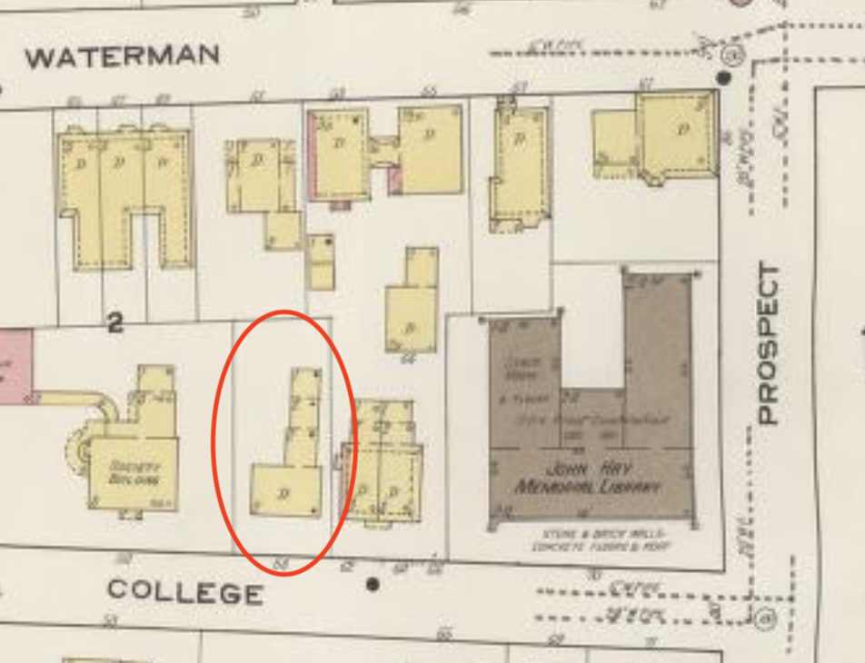

About ARCH 1900
 Our Class
Our Class
ARCH 1900 is one of the most beloved classes at Brown, and for good reason. The course introduces students to the archaeological process, and provides effective, hands-on training in excavating dig sites and working with authentic artifacts. Students are able to actively participate in the archaeological process through conducting their own dig, from breaking ground and discovering artifacts to analyzing and interpreting our finds in a broader historical context. Each semester, a new group of students is able to continue the work of previous students, and contribute to a broader archaeological project that spans years of work.
Our Site
 This semester marks the opening of a new archaeological site, located on the lawn of the List Art Building (LAB). Archival research showed that on this site, there used to stand a two story wooden house, constructed around 1840 and demolished in 1969 to make room for the List Art Building. Located at 58 College St, the building housed many Brown University students as boarders during its lifetime, and was even home to the Alpha Tau Omega fraternity in the 1930s.
This semester marks the opening of a new archaeological site, located on the lawn of the List Art Building (LAB). Archival research showed that on this site, there used to stand a two story wooden house, constructed around 1840 and demolished in 1969 to make room for the List Art Building. Located at 58 College St, the building housed many Brown University students as boarders during its lifetime, and was even home to the Alpha Tau Omega fraternity in the 1930s.
A geophysical survey conducted in April 2023 revealed several anomalies beneath the surface of the LAB site. These anomalies could be structural features of 58 College St, they could be associated with recent landscaping for the List Art Building, or they could be something else altogether — we needed to dig down to find out. Four trenches were outlined, one above each anomaly, and we broke ground in September 2023.
Our Process
Our archaeological process consisted of two main phases: first, excavating artifacts from the site, and second, processing and analyzing the artifacts we found. We dug using trowels, using them to carefully scrape dirt away from the top layer of soil. It was a slow process, but extreme care is necessary to ensure that no artifacts are missed or damaged during the excavation. After dirt was removed from the trench, it was collected and passed through a fine mesh sieve to recover any small artifacts that may have been missed while digging. Every artifact we discovered was meticulously recorded and bagged to ensure that we preserved a detailed record of exactly where and when it was found, as these records are vital for later interpretation of the site.
Once we finished digging, each artifact we collected had to be cleaned, counted, and measured. Some materials, such as ceramic, glass, and slate could be rinsed with water, but more delicate finds such as paper, metal, or textiles needed to be carefully dry brushed to preserve their state. After the artifacts were clean, we were able to carefully examine them and hypothesize about what it might have been used for, how it may have gotten to our site, and what it might be able to tell us about 58 College St.